ARCHIVED
！注意“归档”
This chapter has not been updated for the current version of Orchard, and has been ARCHIVED.
The List feature has been rebuilt from the ground up. This topic may contain inaccuracies with regards to the current
List功能已经从头开始重建。本主题可能包含有关当前的不准确之处
implementation.
实现。
In Orchard, you can create custom content items and assign them as navigation menu entries. If you have more than a few custom content items, you'll probably want to organize them in lists. This topic walks you through this process. In the walkthrough, you'll create a custom content type and display its items in lists. (For information about how to create a custom content type, see Creating Custom Content Types.)
在Orchard中，您可以创建自定义内容项并将其指定为导航菜单项。如果您有多个自定义内容项，则可能需要将它们组织在列表中。本主题将指导您完成此过程。在演练中，您将创建自定义内容类型并在列表中显示其项目。 （有关如何创建自定义内容类型的信息，请参阅[创建自定义内容类型]（创建自定义内容类型）。）
Creating a Custom Containable Content Type
创建自定义可包含内容类型
To begin, you will create a custom content type that represents a book review.
首先，您将创建表示书评的自定义内容类型。
On the dashboard, click Content, and then click the Content Types tab. Click Create New Type, and then in the Display Name field, enter the name "Book Review". (The Content Type ID field automatically generates an ID value that is based on what you entered for the display name, but without spaces.) Click Create to finish creating the new type.
在仪表板上，单击内容，然后单击内容类型选项卡。单击创建新类型，然后在显示名称字段中，输入名称“书评”。 （内容类型ID 字段自动生成一个ID值，该值基于您为显示名称输入的内容，但没有空格。）单击创建以完成创建新类型。
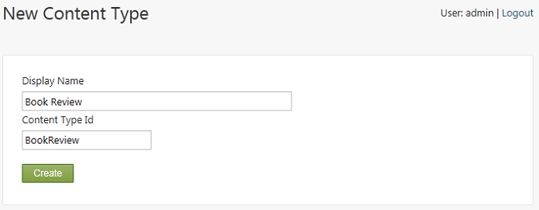
A screen displays in which you can add content parts to the newly created content type. Select the check box for all of the following content parts to add them to your newly created content type.
将显示一个屏幕，您可以在其中添加内容部分到新创建的内容类型。选中所有以下内容部分的复选框，将其添加到新创建的内容类型中。
-
Body. Adds a body section with a rich-text editor that you can use to enter reviews.
-
身体。使用可用于输入评论的富文本编辑器添加正文部分。
-
Comments. Enables users to comment on the reviews.
-
评论。允许用户评论评论。
-
Common. Gives each review a base set of properties, including an owner, a container, versions, a creation date, a publication date, and a modification date.
-
共同。为每个评论提供一组基本属性，包括所有者，容器，版本，创建日期，发布日期和修改日期。
-
Containable. This part tells Orchard that the items of this type can be attached to a list and enables dashboard options to manage the relationship between the items and lists. This is the most important part for the purpose of this walkthrough.
-
中容纳。这部分告诉Orchard这种类型的项目可以附加到列表中，并启用仪表板选项来管理项目和列表之间的关系。这是本演练最重要的部分。
Important Always add the Common part when you add the Containable part. Otherwise you will not be able to add your items to a list.
重要事项添加 Containable 部分时，请务必添加 Common 部分。否则，您将无法将项目添加到列表中。
-
Route. Provides friendly URLs for book reviews.
-
路线。为书评提供友好的URL。
-
Tags. Lets you add tags to book reviews.
-
的标签。允许您为书评添加标签。
Note You can modify an existing content type to add the Containable part, which will allow the site administrator to attach items of that type to lists.
注意您可以修改现有内容类型以添加 Containable *部分，这将允许站点管理员将该类型的项目附加到列表。
The following illustration shows the new Book Review content type with all the parts selected:
下图显示了所有选定部件的新 Book Review 内容类型：
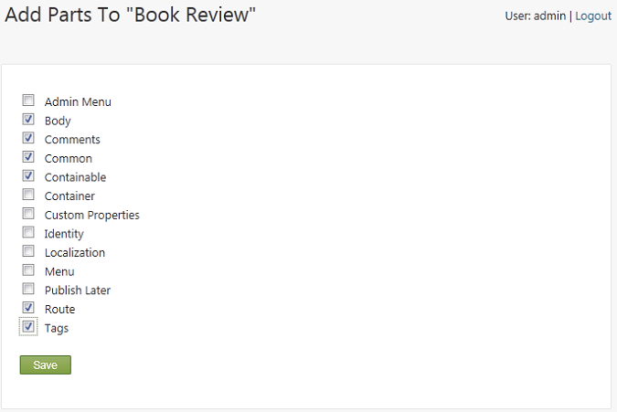
Click Save to finish adding the content parts to the type. An edit screen displays the parts you just added to the type, and provides controls to add fields as well.
单击保存以完成将内容部分添加到类型中。编辑屏幕显示刚刚添加到类型中的部分，并提供控件以添加字段。
In the Edit Content Type screen, click Add next to Fields.
在编辑内容类型屏幕中，单击字段旁边的添加。
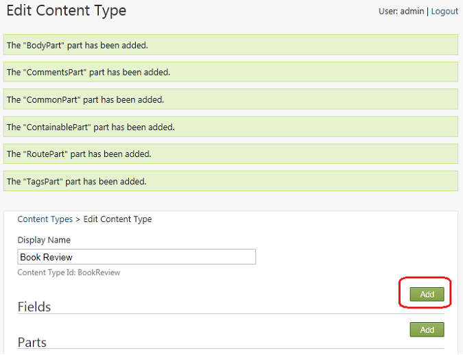
Add each of the following fields by entering the field name in the Add New Field screen (no spaces allowed), and then click Save.
通过在添加新字段屏幕中输入字段名称（不允许空格）添加以下每个字段，然后单击保存。
-
Buy. This field points to a commerce site where the book can be bought.
-
购买。该字段指向可以购买该书的商业网站。
-
Verdict. This field indicates a recommendation for the book, such as "Buy", "Read", or "Skip".
-
判决。该字段表示对该书的推荐，例如“购买”，“阅读”或“跳过”。
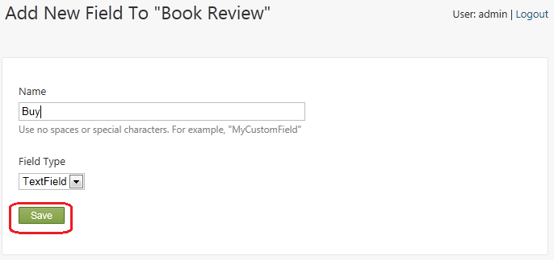
After you have added the fields, your custom type looks like the following illustration. Click Save to save the custom content type.
添加字段后，您的自定义类型如下图所示。单击保存以保存自定义内容类型。
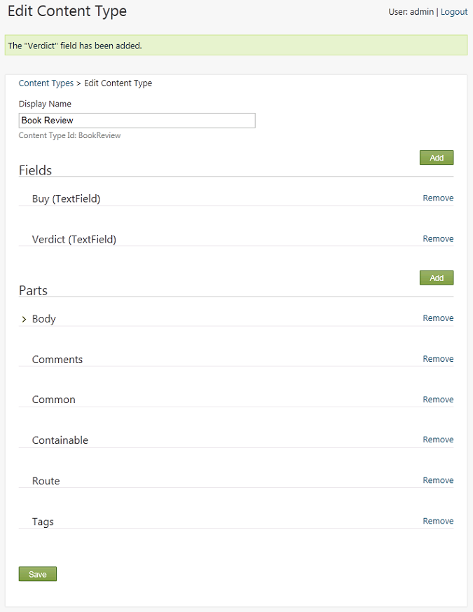
On the dashboard, expand the New menu. You see the Book Review content type. Don't click the new type on the dashboard yet. First you will create a book container to display book reviews in a list rather than as individual items.
在仪表板上，展开 New 菜单。您会看到书评内容类型。不要单击仪表板上的新类型。首先，您将创建一个书籍容器，以便在列表中显示书评，而不是单个项目。
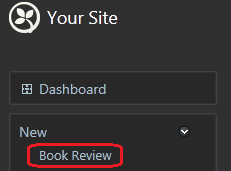
Creating a List of Books
创建书籍列表
To create the Book Review list, in the New menu of the dashboard, click List.
要创建 Book Review 列表，请在仪表板的 New 菜单中单击 List 。
Note: The List module (that enables the New List link) may not be installed or active if you created your site using WebMatrix.
注意：如果您使用WebMatrix创建站点，则 List 模块（启用New List链接）可能无法安装或激活。
Name the new list "Book Reviews" and in the Contains field, select "Book Review" from the drop-down list. Select the Show on main menu option, and enter "Book Reviews" in the Menu Text field. When you're finished, save the new list.
将新列表命名为“书评”，然后在包含字段中，从下拉列表中选择“书评”。选择在主菜单上显示选项，然后在菜单文本字段中输入“书评”。完成后，保存新列表。
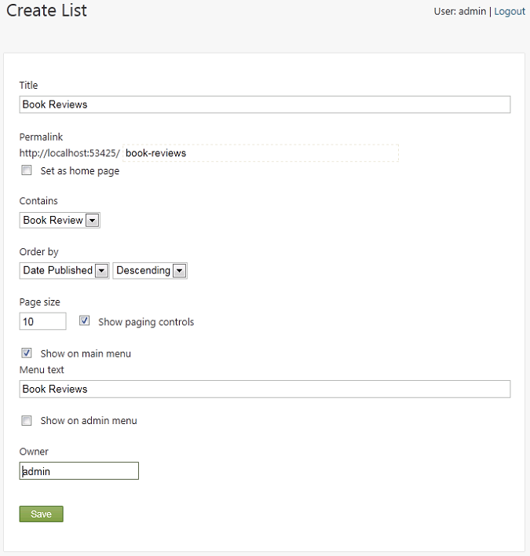
Creating Book Content Items
创建书籍内容项目
Now you can start creating book reviews.
现在您可以开始创建书评了。
In the dashboard, click the new Book Review menu item. Create a few book reviews to populate the list. For each review you create, add values to the following fields, and then click Publish Now.
在仪表板中，单击新的 Book Review 菜单项。创建一些书评以填充列表。对于您创建的每个评论，将值添加到以下字段，然后单击立即发布。
-
Add To. Select List: Book Reviews from the drop-down list, so that the review is added to this list.
-
添加。从下拉列表中选择列表：书评，以便将评论添加到此列表中。
-
Title. Enter the book title. A URL is generated based on the title.
-
标题。输入书名。根据标题生成URL。
-
Body. Enter review comments.
-
身体。输入评论评论。
-
Buy. Add a URL to a site where the book can be purchased.
-
购买。将URL添加到可以购买图书的网站。
-
Verdict. Add a value indicating your recommendation (buy, read, skip).
-
判决。添加一个表示您推荐的值（购买，阅读，跳过）。
-
Tags. Optionally, enter tags so that the list of reviews can be filtered.
-
的标签。 （可选）输入标签，以便过滤评论列表。
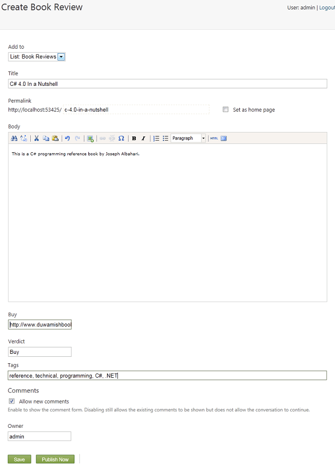
Displaying the List
显示列表
To see the list of book reviews, return to the home page, and then click the new Book Reviews menu item.
要查看书评，请返回主页，然后单击新的书评菜单项。
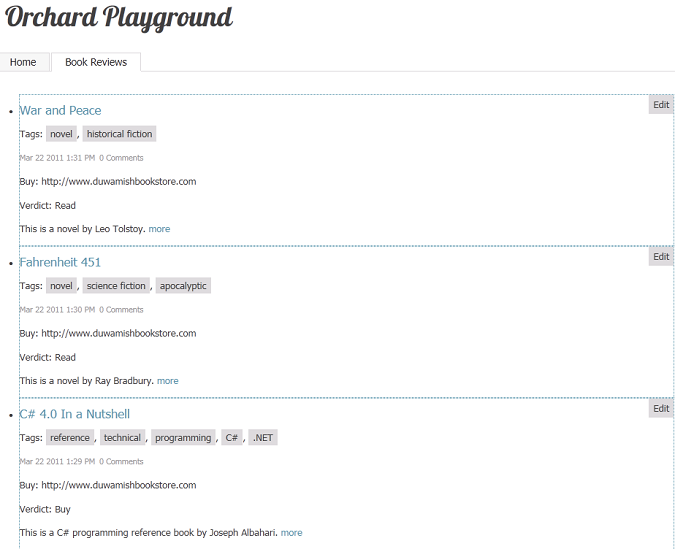
Customizing How the List is Rendered
自定义列表的呈现方式
The Book Review content type uses a text field for the Buy field, because that's the default option in Orchard. However, because this field is intended to contain URLs, a URL field would work better. No specialized URL field available, but you can modify the rendering of the text field to make it better suited for URLs. Create the following new text file in your Orchard site:
Book Review 内容类型使用 Buy 字段的文本字段，因为这是Orchard中的默认选项。但是，由于此字段旨在包含URL，因此URL字段可以更好地工作。没有专门的URL字段，但您可以修改文本字段的呈现，使其更适合URL。在Orchard站点中创建以下新文本文件：
~/Themes/Current theme for your site/Views/Fields/Common.Text.cshtml
~ /主题/ [您网站的当前主题]（您网站的当前主题）/Views/Fields/Common.Text.cshtml
Copy and paste the following code into the new file:
将以下代码复制并粘贴到新文件中：
@using Orchard.Utility.Extensions;
@{
string name = Model.Name;
string value = Model.Value;
}
@if (HasText(name) && HasText(value)) {
<p class="text-field">
@if (name == "Buy") {
<a href="@value" class="value">Buy this book</a>
}
else {
<span class="name">@name.CamelFriendly():</span>
<span class="value">@value</span>
}
</p>
}
This template looks at the name of the field, and if the name is "Buy", the template changes the rendering to be a link to the value of the field.
此模板查看字段的名称，如果名称为“Buy”，则模板将呈现更改为指向字段值的链接。
In addition to customizing how fields render in a custom content type, you can change what's displayed and where it's displayed by using a Placement.info file. If you already have a Placement.info file at the root of your site's current theme folder, edit it and add the Match element shown in the following example before the </Placement> closing tag. If you don't already have a Placement.info file, create a new file and add the following content:
除了自定义字段在自定义内容类型中的呈现方式之外，您还可以使用“Placement.info”文件更改显示内容以及显示位置。如果您已经在站点当前主题文件夹的根目录下有一个Placement.info文件，请编辑它并在＆lt; / Placement＆gt;结束标记之前添加以下示例中显示的 Match 元素。如果您还没有Placement.info文件，请创建一个新文件并添加以下内容：
<Placement>
<Match ContentType="BookReview">
<Match DisplayType="Detail">
<Place Parts_Common_Body="Content:before"
Parts_Tags_ShowTags="Content:after"
Parts_Comments="Footer"/>
</Match>
<Match DisplayType="Summary">
<Place Parts_Common_Body_Summary="Content"
Parts_Comments_Count="Nowhere"
Parts_Tags_ShowTags="Nowhere"
Parts_Common_Metadata_Summary="Nowhere"
Fields_Common_Text="Nowhere"/>
</Match>
</Match>
</Placement>
This placement file affects only the Book Review content type, as specified in the first Match element. Inside the first Match element there are two child Match elements that match the Detail and Summary display types. Those matches specify how book reviews are rendered in two cases: the details view and the list view.
此放置文件仅影响 Book Review 内容类型，如第一个 Match 元素中所指定。在第一个 Match 元素中，有两个子匹配元素匹配 Detail 和 Summary 显示类型。这些匹配指定在两种情况下如何呈现书评：细节视图和列表视图。
When the details are displayed, the placement file specifies that the body of the review should appear at the beginning of the Content zone, the tags at the end of the same zone, and the comments in the Footer zone. If you are currently signed in as an admin user, temporarily sign out so that you can see the book reviews as a user would. Click one of the book reviews to see how the module that you added changes the rendering.
显示详细信息时，展示位置文件指定评论正文应显示在内容区域的开头，同一区域末尾的标记以及页脚中的评论区。如果您当前以管理员用户身份登录，请暂时退出，以便您可以按用户的身份查看书评。单击其中一个书评以查看您添加的模块如何更改渲染。
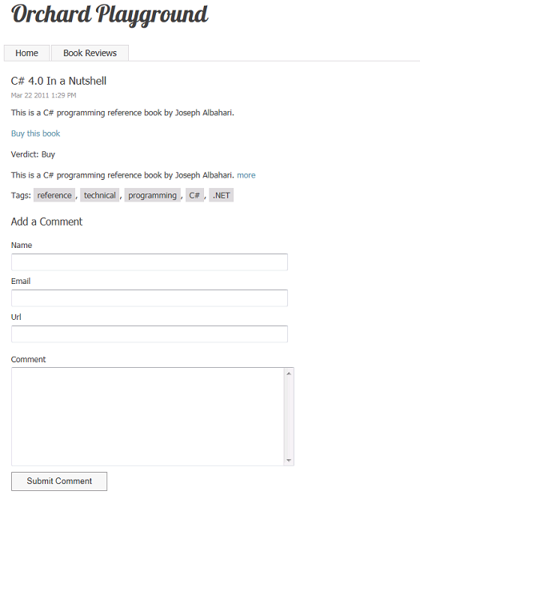
When the whole list of books is displayed, you want to display a more abbreviated view, such as the title and summary only for each book. To suppress the display of the comment count, the tags, the metadata and the fields, the Placement.info file sends those shapes to the "Nowhere" zone. The "Nowhere" zone is not actually a defined Orchard zone, it is simply a standard way in .info files of suppressing elements you want to hide by sending them to an undefined zone. The summary is sent to the Content zone. Click the Book Reviews menu entry to view the updated rendering of your list of reviews.
显示整个书籍列表时，您希望显示更简略的视图，例如每本书的标题和摘要。为了禁止显示注释计数，标签，元数据和字段，Placement.info文件将这些形状发送到“Nowhere”区域。 “Nowhere”区域实际上并不是一个已定义的Orchard区域，它只是.info文件中的一种标准方法，通过将要发送的元素发送到未定义的区域来抑制它们。摘要将发送到 Content 区域。单击 Book Reviews 菜单条目以查看评论列表的更新呈现。
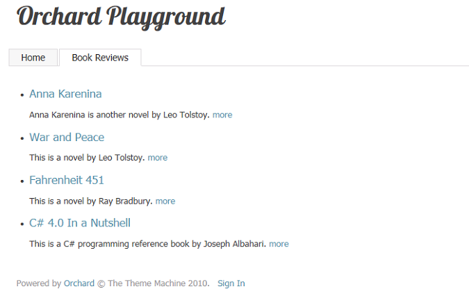
Note The zones referred to in this section of the topic are not layout-level widget zones, but rather local zones. As an example of how these are defined, check out the /Core/Contents/Views/Items/Content.Summary.cshtml file.
注意本主题的本节中提到的区域不是布局级别的窗口小部件区域，而是本地区域。作为如何定义这些内容的示例，请查看_ / Core / Contents / Views / Items / Content.Summary.cshtml_文件。
Displaying Book Lists as Widgets
将图书列表显示为小部件
The next task is to display the latest book review in a right-hand sidebar on the home page of the site. You will use a container widget object to do that.
下一个任务是在站点主页的右侧边栏中显示最新的书评。您将使用容器窗口小部件对象来执行此操作。
Sign back into your site, and on the dashboard click Widgets. On the Widgets screen, in the drop-down list under Current Layer, select the TheHomePage layer. In the list of zones, find the zone named Aside Second and click Add next to the zone. In the Choose a Widget screen, click Container Widget. The Add Widget screen is displayed.
重新登录您的网站，然后在信息中心点击小部件。在 Widgets 屏幕上，在 Current Layer 下的下拉列表中，选择 TheHomePage 图层。在区域列表中，找到名为 Aside Second 的区域，然后单击区域旁边的添加。在选择小组件屏幕中，单击容器小组件。将显示添加窗口小部件屏幕。
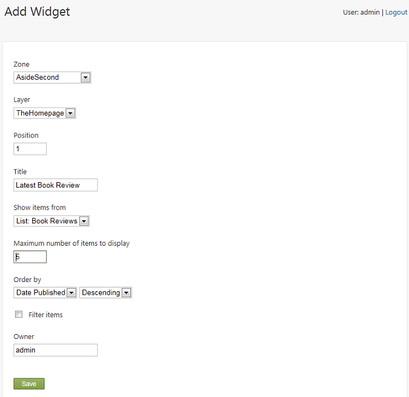
In the Title field, enter "Latest Book Review". Under Show items from, make sure that List: Book Reviews is selected. Then save the widget.
在标题字段中，输入“最新书评”。在显示项目，确保选择列表：书评。然后保存小部件。
Return to the home page, and notice that the latest reviews from your book reviews list are now displayed in the sidebar.
返回主页，注意您的书评评论列表中的最新评论现在显示在侧栏中。
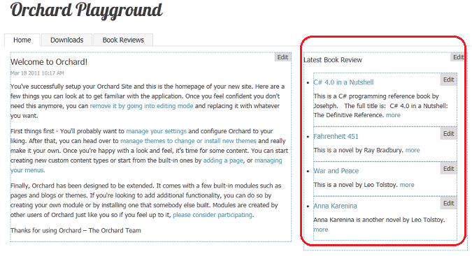
Creating a Custom List Widget
创建自定义列表小组件
Using the filter feature, you can filter the values of custom properties named Custom1, Custom2, and Custom3. This in turn lets you filter what items from a list are displayed in a page. Now you will add some custom properties that will let you filter the display of your reviews.
使用过滤器功能，您可以过滤名为 Custom1 ， Custom2 和 Custom3 的自定义属性的值。这反过来允许您过滤列表中的哪些项目在页面中显示。现在，您将添加一些自定义属性，以便您过滤评论的显示。
In the dashboard, click Content, and then click the Content Types tab. Click Edit next to Book Review. On the Edit Content Type screen, click Add Parts.
在仪表板中，单击内容，然后单击内容类型选项卡。点击书评旁边的编辑。在编辑内容类型屏幕上，单击添加部件。
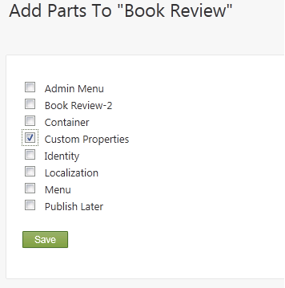
Select the Custom Properties part, and click Save.
选择自定义属性部分，然后单击保存。
Now return to the Book Reviews page in your site and edit one of your book reviews. You will see text fields for the three new properties. Enter "Featured" into Custom One, and then save the updated review.
现在返回您网站的 Book Reviews 页面并编辑您的一本书评。您将看到三个新属性的文本字段。在 Custom One 中输入“Featured”，然后保存更新的评论。
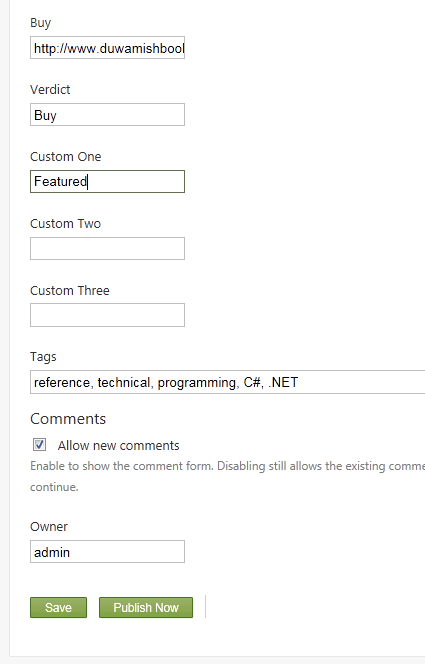
You can repeat the last step for any other reviews you'd like to feature on the home page.
您可以在主页上重复您想要提供的任何其他评论的最后一步。
To filter the reviews so that only featured reviews are displayed on the home page, click Widgets on the dashboard, and in the Widgets screen, select the TheHomePage layer from the Current Layer drop-down list. Then click the Latest Book Review widget that you created earlier.
要过滤评论以便仅在主页上显示特色评论，请单击仪表板上的小部件，然后在小部件屏幕中，从当前图层中选择 TheHomePage 图层 下拉列表。然后单击您之前创建的 Latest Book Review 小部件。
In the Edit Widget screen, select the Filter items option, select the Custom 1 property from the first drop-down list, select is equal to from the second drop-down list, and enter "Featured" in the third drop-down list. This filters reviews so that only featured reviews are displayed on the home page. When you're finished, save the updated widget.
在 Edit Widget 屏幕中，选择 Filter items 选项，从第一个下拉列表中选择 Custom 1 属性，从第二个下拉列表中选择等于在列表中，在第三个下拉列表中输入“精选”。这会过滤评论，以便仅在主页上显示精选评论。完成后，保存更新的小部件。
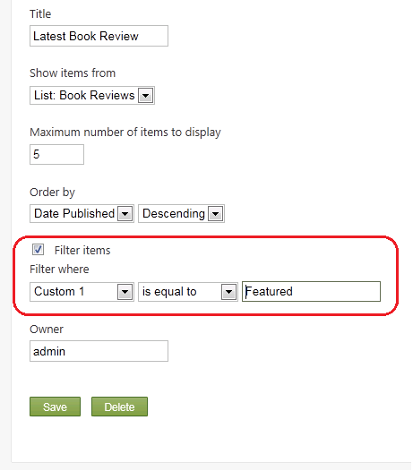
Browse to your home page. Notice that only the book reviews for which you entered "Featured" in the Custom 1 field are displayed.
浏览到您的主页。请注意，仅显示您在 Custom 1 字段中输入“Featured”的书评。
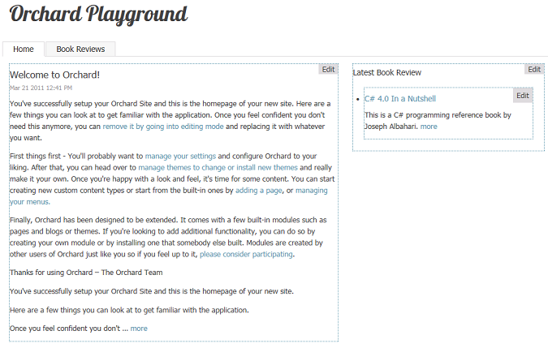
Now click Widgets on the dashboard, return to the Widgets screen, and again select the TheHomePage layer from the Current Layer drop-down list. Add another widget to the TheHomePage layer as you did previously by clicking Add next to the AsideSecond zone, and then click Container Widget to add it. This time in the Add Widget screen, set the Position value to 6 so that the new list appears below the first one. Set the Title property to "Featured Reviews", set the Maximum number of items to display value to 2, and select the Filter items option. Set the filter criterion to "Custom 1 is equal to Featured". Save your changes.
现在单击仪表板上的 Widgets ，返回 Widgets 屏幕，再次从 Current Layer 下拉列表中选择 TheHomePage 图层。通过单击 AsideSecond 区域旁边的 Add ，然后单击 Container Widget 添加另一个小部件到 TheHomePage 层。这次在 Add Widget 屏幕中，将 Position 值设置为6，以便新列表显示在第一个下面。将 Title 属性设置为“Featured Reviews”，将要显示的最大项目数值设置为2，然后选择 Filter items 选项。将过滤条件设置为“自定义1等于精选”。保存更改。
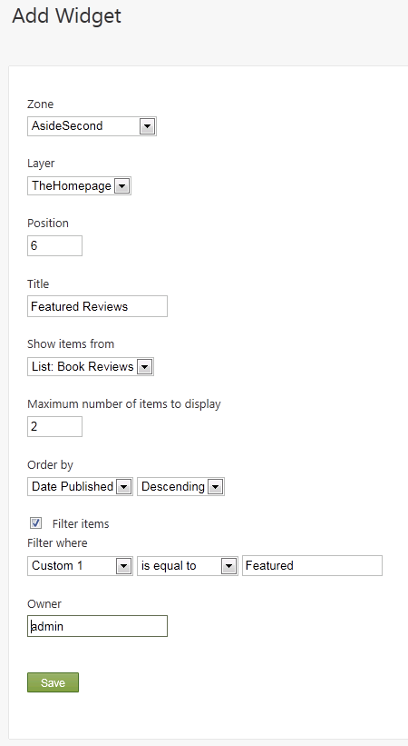
On the Widgets screen, click the Latest Book Review widget to edit it. Clear the Filter items check box, which means that it no longer filters reviews. Save the widget.
在 Widgets 屏幕上，单击 Latest Book Review 小部件进行编辑。清除过滤项目复选框，这意味着它不再过滤评论。保存小部件。
The following illustration shows what the home page looks like with the two widgets that you configured. It displays both the latest reviews ordered by date, and the featured review in which you added the value "Featured" to the Custom 1 property field for a specific book, and filtered for that property.
下图显示了使用您配置的两个小部件的主页外观。它显示按日期排序的最新评论，以及在特定图书的“自定义1”属性字段中添加“特色”值的特色评论，并针对该属性进行过滤。
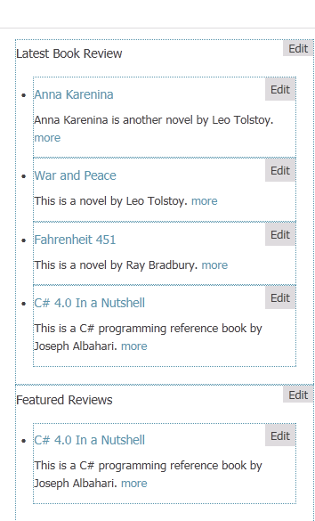
Pagination
分页
The list feature has built-in support for pagination on list pages.
列表功能内置支持列表页面上的分页。
On the dashboard, click Content, and then click Edit next to Book Reviews. In the Edit list screen, change the page size to a number that is smaller than the number of reviews you've added to the system. Leave Show paging controls selected. Save the changes.
在仪表板上，单击内容，然后单击书评旁边的编辑。在编辑列表屏幕中，将页面大小更改为小于您添加到系统的评论数量的数字。保留显示分页控件已选中。保存更改。
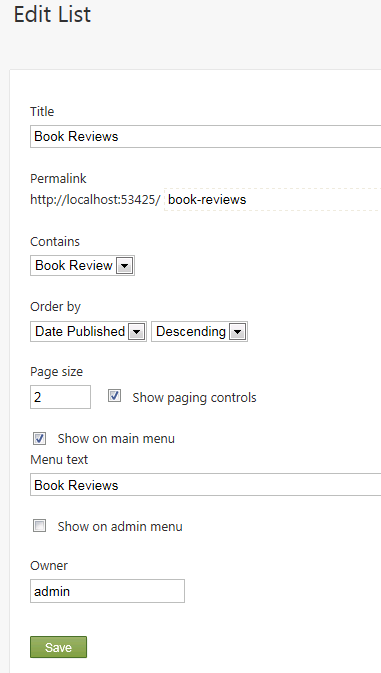
Go back to the Book Reviews page. Notice that there is an Older button that you can click to see older book reviews.
回到书评页面。请注意，有一个旧按钮，您可以单击以查看较旧的书评。
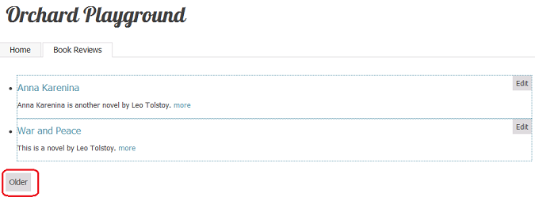
Note Pagination is available only on list pages and not on list widgets. This is by design, because pagination within a widget would allow multiple pagers on the same page, which could be confusing.
注意分页仅在列表页面上可用，而不在列表小部件上。这是设计使然，因为窗口小部件中的分页将允许同一页面上的多个寻呼机，这可能会令人困惑。
Change History
改变历史
-
Updated for Orchard 1.1
-
更新了Orchard 1.1 *
- 3-18-11: Updated all screens, menu options, and procedures for working with lists.